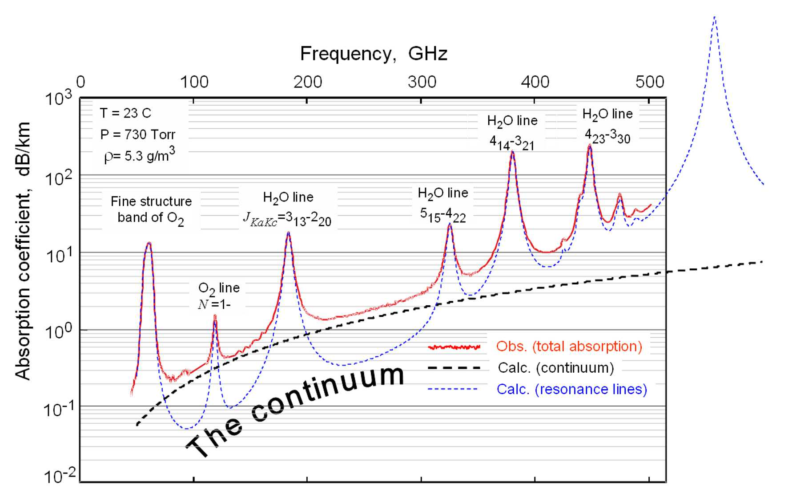
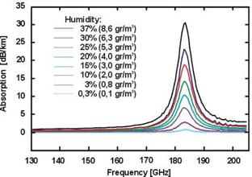
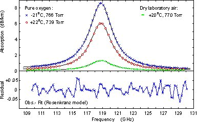
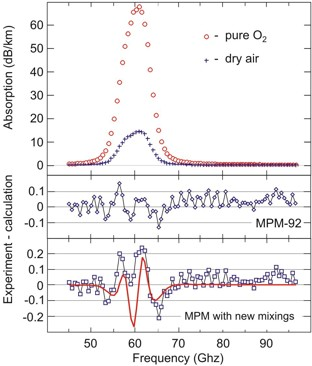
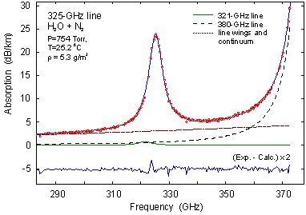
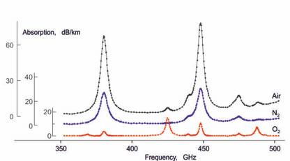
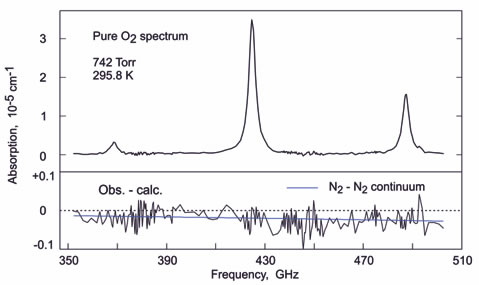
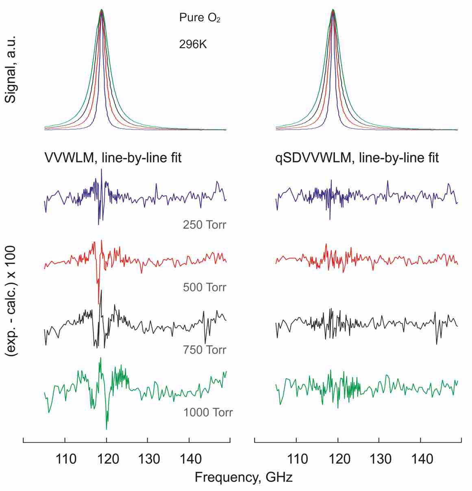

Instruments Resonator spectrometer Examples
of the spectrometer use Resonator spectrometer Examples
of the spectrometer use
Use of the resonator spectrometer for studing of atmospheric lines

Experimental possibility of broad-band atmospheric absorption studies in continuous range 40-510 GHz (in 6 sub-bands) was demonstrated for the first time. See Ref. 2 (2006) and Refs. 1,2 (2013) for more details. The figure presents experimental recording of laboratory atmosphere absorption spectrum. Details of the continuum absorption study can be found in Ref. 5 (2011). |
Water
line at 183 GHz in air |
The line of atmospheric remote sensing
importance |
|  |
A possibility of accurate absolute humidity measurements
using 183- GHz water line was demonstrated. The measured integrated
intensity coincided with the value given in HITRAN to an accuracy of 0.3%. Measurements of water content
in the air or other gas mixtures is one of the prime needs for many
technological processes (cement,
spaghetti, semiconductors, opto-fibres etc.) |
Advantages of the method:
Volumetric measurement. Self calibration. High sensitivity. The line pressure shifting parameter was measured
for the first time by laboratory technique. Refined values of the line
broadening by pressure of N2, O2 and air were obtained. See Ref.
1 (2003) for more details. |
Oxygen
line at 118 GHz
|

|
The line is of great importance for atmospheric radiometry
(temperature / pressure profiles of atmospheric column) and radio-astronomy
(oxygen gas searching in interstellar space) and is used by hundreds of weather
and scientific satellite based, airborne and on surface instruments. The
line parameters which can be only obtained from laboratory measurements
set the limit of accuracy of the information coming from the instruments. |
The
line has never been observed in laboratory
with such a good signal to noise radio. The line pressure broadening and
shifting parameters were refined. The
line mixing parameter was measured for the first time. See Ref.
7 (2001) , Ref. 2
(2004), Ref. 8 (2007), Ref. 14 (2008), and Ref. 4 (2009) for
details.
|
60-GHz Oxygen band in laboratory air and pure O2 at atmospheric pressure |

|
The oxygen band study allowed for the first time a quantitative
assessment of second order line mixing effects. Solid red line corresponds
to calculated 2nd order mixing contribution [E.W. Smith, 1981]. The study
resulted in derivation of a refined set of
Millimeterwave Propagation Model (MPM) coefficients.
See Ref.
6 (2005) for more details.
Further analysis of the band shape in a temperature range of -28 0C to +60 0C at atmospheric pressure with absorption-variation
sensitivity of 0.002 dB/km permitted for the first time
|
a quantitative characterization of manifestation of the second order line mixing effect. The study resulted in development of extended Millimeterwave Propagation Model (MPM) for a wide scope of applications.
See Ref. 1 (2011) and Ref.5 (2013) for more details.
The 325-GHz water vapor line study
|

|
The 325-GHz line was studied in mixtures of water vapor
with nitrogen and oxygen at atmospheric pressure and room temperatures.
The line intensity,
self-, N2- and O2- pressure broadening and shifting parameters of the
line have been measured. A number of parameters, in particular N2- and
O2-pressure shifts, were obtained for the first time.
|
The 350-500 GHz spectra
|

|
The first continuous experimental spectra of moist nitrogen, oxygen and air at atmospheric pressure and room temperature
in the 350-500 GHz range recorded using the coherent radiation source are presented. See Ref. 1,2 (2013) for more details.
|
The first pure rotational triplet of O2 |
|  |
Тhe triplet lines were for the first time recorded at atmospheric pressure. The spectrum analysis suggested that the calculated intensities of the triplet lines reported in modern databases are underestimated by about 2%. See Ref. 1 (2013) for details. |
The first observation of the SD effect at the 118-GHz line |
|  |
Тhe first observation of manifestation of the speed dependence (SD) of the collisional cross-section in the 118-GHz line shape, which was completed by the development of the refined line shape model for atmospheric applications. See Ref. 9 (2017) for details. |